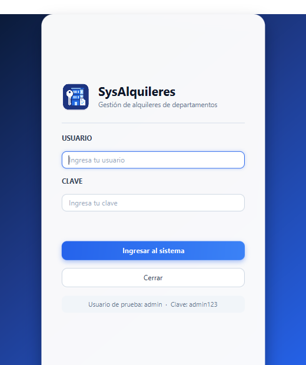
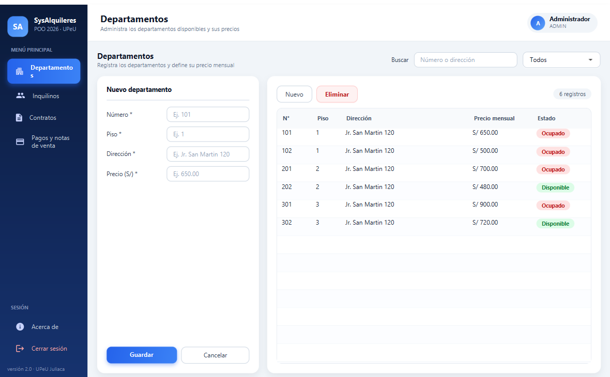
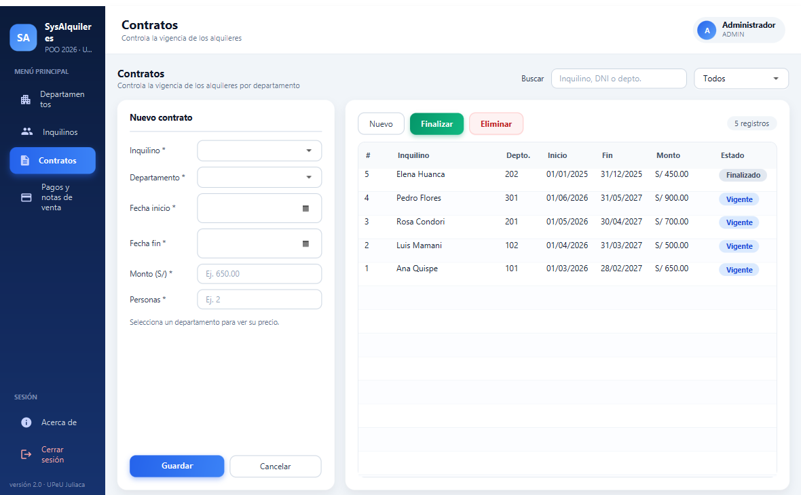
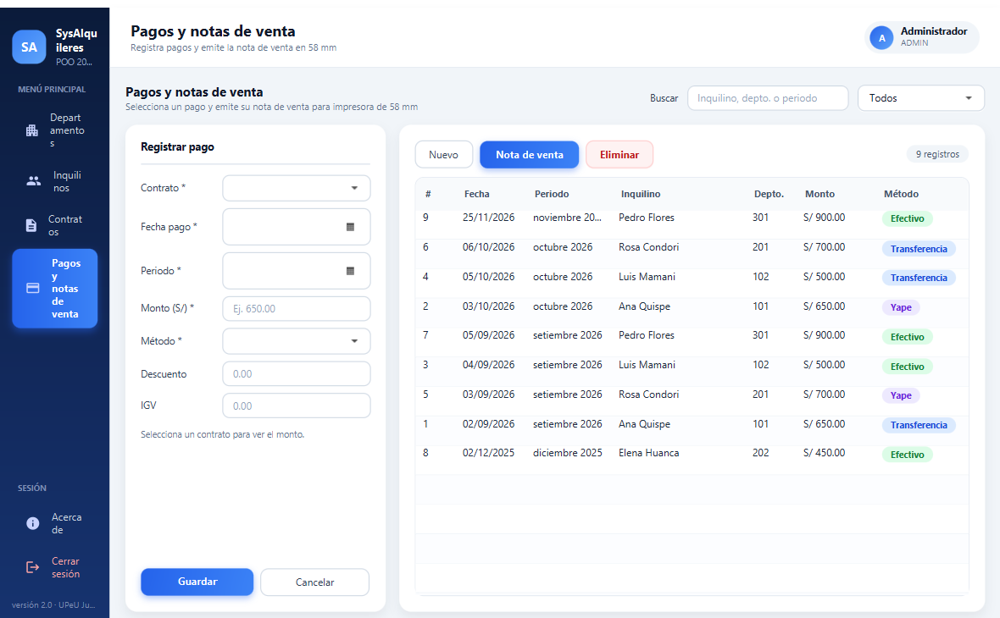

1 Presentación del sistema
SysAlquileres centraliza la información de departamentos, inquilinos, contratos y pagos, y aplica reglas que evitan errores comunes.
Datos dispersos
Cuadernos o Excel permitían alquilar dos veces un departamento o registrar pagos sin contrato.
Validaciones reales
El sistema valida DNI, fechas, solapamiento de contratos y estados antes de guardar.
Nota de venta
Impresión térmica en 58 u 80 mm por cable USB o Bluetooth, justo al registrar el pago.
Qué puedes hacer
- Registrar, buscar, editar y eliminar los cuatro módulos principales.
- Controlar el estado de los departamentos (disponible / ocupado) automáticamente.
- Finalizar contratos con motivo y liberar el departamento.
- Registrar pagos con descuento e IGV y emitir la nota de venta.
- Configurar la impresora desde un panel propio y guardar la configuración.
- Trabajar con base local H2 o con Supabase en la nube.
2 Acceso e instalación
El sistema funciona en Windows. La APK (v1.1) es solo un apoyo informativo: valida el rol y, si eres cliente, muestra únicamente tus datos.
2.1 Ejecutable de Windows
- Descarga
dist/SysAlquileres-v2.0.0-portable.zip. - Extrae el ZIP en una carpeta (por ejemplo
Escritorio\SysAlquileres). - Ejecuta
SysAlquileres.exe. No necesitas instalar Java ni Maven. - Conserva juntas las carpetas
app\,runtime\y el ejecutable.
2.2 Desde el código fuente
cd "D:\CRUD DEPARTAMENTOS\SysAlquileres" mvn javafx:run # Compilar y empaquetar mvn -B -DskipTests package
2.3 Iniciar sesión

- Escribe el usuario y la clave.
- Pulsa Ingresar al sistema (también funciona la tecla Enter).
- Si los datos son correctos se abre la ventana principal; si no, aparece un mensaje rojo.
- Cerrar sale de la aplicación.
admin · Clave: admin123. Solo se aceptan usuarios con estado Activo.3 Pantalla principal
La ventana se divide en barra lateral, cabecera y área de trabajo.

| Zona | Contenido |
|---|---|
| Barra lateral | Departamentos, Inquilinos, Contratos, Pagos y notas de venta, Config. impresión, Acerca de y Cerrar sesión. |
| Cabecera | Título del módulo, subtítulo y tarjeta del usuario (avatar, nombre y rol). |
| Área de trabajo | Formulario a la izquierda y tabla con búsqueda a la derecha. |
4 Módulo Departamentos
Administra los departamentos, su precio mensual y su disponibilidad.

Registrar o editar
- Pulsa Nuevo para limpiar el formulario.
- Completa Número, Piso, Dirección y Precio (S/).
- Pulsa Guardar. Para editar, haz clic en una fila: sus datos se cargan en el formulario.
Buscar, filtrar y eliminar
- Buscar: escribe número o dirección; ignora mayúsculas y acentos.
- Filtro: elige Todos, Disponible u Ocupado.
- Eliminar: selecciona una fila y confirma. No se permite si el departamento tiene contratos.
5 Módulo Inquilinos
Registra personas naturales o empresas jurídicas con sus datos de identificación.

- Pulsa Nuevo y completa DNI (8 dígitos), nombre, apellido, teléfono y dirección.
- En Personería elige:
- Natural: solo datos básicos.
- Jurídica: se habilitan representante legal, RUC (10 u 11 dígitos) y dirección fiscal.
- Pulsa Guardar.
- El DNI debe ser único y tener exactamente 8 dígitos.
- La búsqueda funciona por DNI, nombre o apellido, con o sin acentos.
- No se puede eliminar un inquilino que tenga contratos.
6 Módulo Contratos
Vincula un inquilino con un departamento en un rango de fechas.

Crear un contrato
- Pulsa Nuevo.
- Selecciona el Inquilino y el Departamento (solo aparecen los disponibles).
- Revisa las fechas de inicio y fin, el monto mensual y la cantidad de personas.
- Pulsa Guardar. El departamento quedará Ocupado.
Finalizar un contrato
- Selecciona el contrato en la tabla y pulsa Finalizar.
- Escribe el motivo: Fin de plazo, Rescisión, Incumplimiento o Mutuo acuerdo.
- Confirma. El departamento vuelve a Disponible y el contrato se marca Finalizado.
7 Módulo Pagos
Registra los cobros mensuales de cada contrato y emite la nota de venta.

Registrar un pago
- Pulsa Nuevo y selecciona el Contrato.
- Completa Fecha de pago, Periodo, Monto y Método (Efectivo, Transferencia, Yape, Plin o Tarjeta).
- Si hay, ingresa Descuento e IGV.
- Pulsa Guardar.
- El sistema pregunta si deseas Imprimir nota. Elige Imprimir nota o Ahora no.
Total = Monto − Descuento + IGV. Se usa BigDecimal para no perder centavos.Reemitir una nota
Selecciona un pago en la tabla y pulsa Nota de venta. Se abrirá la vista previa con el número NV-000123 correspondiente a ese pago.
8 Nota de venta térmica
Documento interno de control para la impresora POS térmica de 58 u 80 mm.
32 columnas
384 puntos / 12 por carácter. Es el papel más común en POS pequeñas.
48 columnas
576 puntos / 12 por carácter. Ticket más ancho y legible.
Ejemplo de ticket
INMOBILIARIA J & D & J
RUC 00000000
Salida Arequipa KM 6
Tel. 900 876 123
--------------------------------
NOTA DE VENTA
NV-000123
--------------------------------
Cliente: Pedro Flores
DNI: 87654321 Depto.: 301
Periodo: noviembre 2026
Atendido: Administrador
--------------------------------
Alquiler S/ 1,250.00
Descuento -S/ 50.00
IGV S/ 100.00
--------------------------------
TOTAL S/ 1,300.00
--------------------------------
Metodo: Efectivo
Gracias por su preferencia
Documento no fiscal
--------------------------------
Ventana de impresión
- Vista previa: muestra el ticket exactamente como saldrá.
- Papel: cambia entre 58 y 80 mm; el texto se rearma en 32 o 48 columnas.
- Conexión: Cable / Windows o Bluetooth (COM).
- Imprimir nota: envía el trabajo a la impresora elegida.
- Copiar texto: copia el ticket al portapapeles para compartirlo.
Cómo llega a la impresora
| Modo | Cómo funciona | Uso típico |
|---|---|---|
| Cable / Windows | PrintServiceLookup + PrinterJob dibuja el texto con fuente monoespaciada y papel de 58/80 mm. | USB o Bluetooth instalado como impresora. |
| Bluetooth / COM | jSerialComm abre el puerto COM y envía bytes ESC/POS: ESC @ (iniciar) y ESC d 4 (avanzar líneas). | Cuando el Bluetooth solo crea un puerto serial (SPP). |
9 Configuración de impresión
Panel propio en la barra lateral: botón Config. impresión.

| Campo | Qué configure |
|---|---|
| Conexión | Cable / Windows (controlador) o Bluetooth / puerto COM. |
| Papel | 58 mm (32 columnas) o 80 mm (48 columnas). |
| Impresora de Windows | Por ejemplo POS-58-Series o POS-80-Series. |
| Puerto COM / Bluetooth | Puerto creado al emparejar la impresora (por ejemplo COM4). |
| Velocidad | 9600 baudios por defecto; también 19200, 38400, 57600 y 115200. |
Botones del panel
- Guardar configuración: persiste los valores en
%USERPROFILE%\.SysAlquileres\impresion.properties. - Imprimir prueba: envía un ticket corto de prueba con el ancho elegido.
- Actualizar listas: vuelve a buscar impresoras y puertos COM.
Archivo de configuración
papel=58 usar.windows=true impresora=POS-58-Series puerto.com= baudios=9600
10 Base de datos y modelo
El sistema puede trabajar en local o en la nube con el mismo código.
SUPABASE_DB_* están configuradas y tienen prioridad. El archivo application.properties trae H2 como valor por defecto.Prioridad de configuración
application.properties(H2 local por defecto).- Propiedades del sistema:
-Ddb.url=.... - Variables genéricas:
DB_URL,DB_USERNAME,DB_PASSWORD, etc. - Variables de Supabase:
SUPABASE_DB_URL,SUPABASE_DB_USER,SUPABASE_DB_PASSWORD,SUPABASE_DDL_AUTO,SUPABASE_SEED_DEMO(máxima prioridad).
Volver a H2 local
# 1) Cierra la aplicación # 2) Quita las variables SUPABASE_DB_* y DB_* # 3) Ejecuta de nuevo mvn javafx:run
La base H2 se crea en data/alquileres.mv.db (o en ~/SysAlquileres/data/). Para reiniciarla, elimina la carpeta data/ con la app cerrada: se recreará con los datos de ejemplo.
Tablas del sistema
| Tabla | Para qué sirve |
|---|---|
usuario | Login, clave, nombre, rol y estado. |
tipo_personeria | Natural / Jurídica. |
departamento | Número, piso, dirección, precio y estado. |
inquilino | DNI único y datos personales / jurídicos. |
contrato | Fechas, monto, estado, inquilino y departamento. |
pago | Fecha, periodo, monto, método, descuento e IGV. |
finalizacion_contrato | Fecha y motivo de finalización. |
Modelo Power Architect
database/modelo-power-architect.architect→ modelo actualizado con 7 tablas.database/modelo-power-architect-original.architect→ modelo original entregado en REQUERIMIENTOS.
Cambios del actualizado: tabla usuario agregada; descuento e igv como numeric(10,2); RUC de 11 caracteres; id_finalizacion como BIGINT; índices de contrato y pago.
11 Solución de problemas
| Síntoma | Causa probable | Solución |
|---|---|---|
| El login no acepta las credenciales | Usuario inactivo o datos incorrectos. | Verifica admin / admin123 y que el usuario esté Activo. |
| No aparece la impresora | No está instalada o no está encendida. | Instálala en Windows y pulsa Actualizar listas en el panel. |
| No hay puertos COM | Impresora Bluetooth no emparejada o apagada. | Empareja por Bluetooth, enciende la impresora y actualiza listas. |
| “No se pudo abrir el puerto COM” | Puerto ocupado o número equivocado. | Revisa el COM en Administrador de dispositivos y selecciónalo. |
| Ticket cortado o desordenado | Papel incorrecto. | Elige 58 mm o 80 mm según el papel físico. |
| No se puede eliminar un registro | Tiene contratos o pagos asociados. | Finaliza o elimina primero los registros dependientes. |
| Error “JavaFX runtime components are missing” | Ejecutar App directamente. | Usa el botón Run o mvn javafx:run. |
| La app no conecta a la base | Variables de entorno o red. | Revisa el panel Config. impresión: muestra el motor y la URL activos. |
12 Preguntas frecuentes
¿La nota de venta es una factura o boleta?
No. Es una nota de venta interna para control del alquiler. No tiene validez fiscal ni reemplaza los comprobantes de SUNAT.
¿Puedo imprimir por Bluetooth si Windows la instaló como impresora?
Sí. En ese caso elige Cable / Windows. El modo Bluetooth / COM es para impresoras que solo crean un puerto serial.
¿Dónde se guarda la configuración de la impresora?
En %USERPROFILE%\.SysAlquileres\impresion.properties. La ruta exacta se muestra en el panel Config. impresión.
¿Se está usando Supabase o H2?
En este entorno, Supabase / PostgreSQL, porque las variables SUPABASE_DB_* tienen prioridad. H2 es el valor por defecto cuando esas variables no existen. La base inicial incluida es H2 (gratuita); la nube es opcional y tiene costo adicional.
¿Cómo vuelvo a H2 local?
Cierra la aplicación, elimina o desactiva las variables SUPABASE_DB_* y DB_*, y vuelve a ejecutar. La base se crea en la carpeta data/.
¿Dónde está el modelo de Power Architect?
En database/modelo-power-architect.architect (actualizado, 7 tablas). El original se conserva como modelo-power-architect-original.architect.
¿La clave del usuario está segura?
En este proyecto académico se guarda en texto plano para simplificar. En un sistema real debe almacenarse con un hash (por ejemplo BCrypt).
¿Puedo copiar el ticket sin imprimirlo?
Sí. En la ventana de nota de venta pulsa Copiar texto; el contenido queda en el portapapeles.
13 APK de apoyo: ADMIN y CLIENTE
La versión móvil v1.1 ya no permite crear ni editar datos: solo consulta.
- El login valida el rol de la tabla
usuario. - ADMIN ve los listados generales de los cuatro módulos, sin botones de escritura.
- CLIENTE ve solamente su departamento, contrato, vencimiento e historial de pagos.
- El usuario del cliente es su DNI; la clave se genera al crear el contrato en el escritorio y se muestra al administrador.
- Si se crea otro contrato para el mismo DNI, la clave se renueva.
dist/SysAlquileres-Movil-v1.1.apk. Guía completa en docs/APK_CLIENTES.md.14 Funcionalidades según roles o perfiles
El sistema define tres formas de uso según el perfil y el dispositivo.
| Perfil | Dónde | Puede ver | Puede hacer | No puede |
|---|---|---|---|---|
| Administrador | Escritorio `.exe` | Los 4 módulos y los paneles de apoyo. | Alta, consulta, edición y baja; emitir nota de venta; gestionar accesos. | — |
| Administrador | APK v1.1 | Listados generales de departamentos, inquilinos, contratos y pagos. | Consultar, ver detalle y compartir la nota de venta. | Crear, editar ni eliminar registros. |
| Cliente | APK v1.1 | Solo su departamento, contrato, vencimiento e historial de pagos. | Actualizar sus datos y cerrar sesión. | Ver datos de otros inquilinos ni modificar información. |
15 Recuperación de clave del cliente
Si el inquilino olvida su clave, el administrador la consulta o renueva desde el escritorio.
- Abrir Accesos clientes en la barra lateral del `.exe`.
- Buscar por DNI o nombre y seleccionar al cliente.
- Marcar Mostrar claves para ver la clave actual en la tabla.
- Pulsar Generar clave y luego Guardar clave para asignar una nueva.
- Entregar la nueva clave al inquilino para que ingrese en la APK.
16 Anexos y archivos útiles
| Archivo | Contenido |
|---|---|
README.md | Descripción general, ejecución y estructura. |
docs/CONFIGURACION.md | Panel de impresora, base activa y modelo Architect. |
docs/IMPRESION_58MM.md | Guía técnica de impresión térmica. |
docs/SUPABASE.md | Configuración de la base en la nube. |
docs/GUIA_EXPOSICION.md | Explicación del código y guion. |
docs/PRESENTACION.html | Presentación interactiva de 22 diapositivas. |
database/modelo-power-architect.architect | Modelo de datos actualizado. |